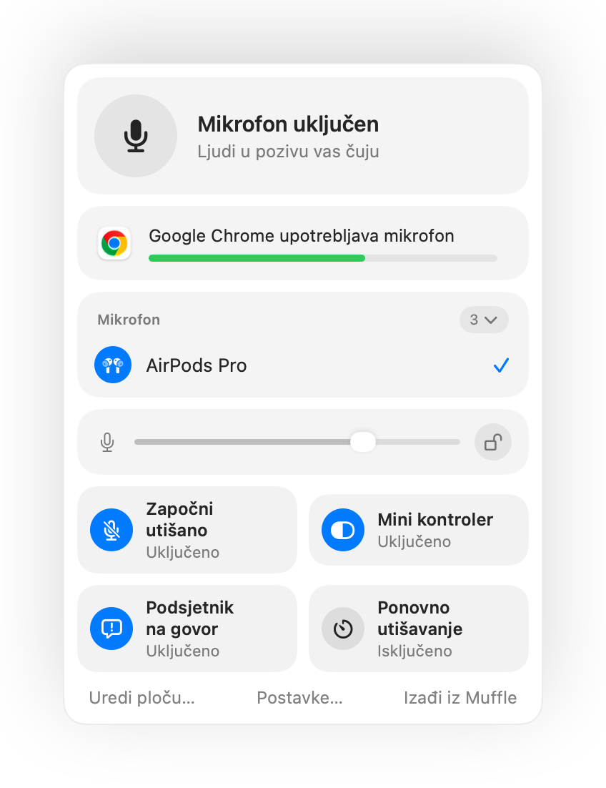

Kako utišati pozive u bilo kojoj kartici preglednika na Macu
Sve više poziva odvija se u pregledniku: Google Meet, Teams na webu, virtualni uredi poput SoWork i Gather, Whereby ili Jitsi. Svaki servis ima svoj gumb i prečac, a oni rade samo dok je ta kartica u prvom planu.
Preglednici također ignoriraju pritisak na AirPods za utišavanje na Macu. Muffle preuzima taj pritisak ili jedan globalni tipkovni prečac te utišava mikrofon za sve kartice odjednom.
Utišajte bilo koji web poziv
- 1
Instalirajte Muffle i dopustite pristup mikrofonu.
- 2
Otvorite poziv u bilo kojoj kartici preglednika.
- 3
Pritisnite stapku na AirPods slušalicama ili tipkovni prečac Control-Option-M, iz bilo koje aplikacije ili kartice.
- 4
Pogledajte ikonu u traci s izbornicima: crvena boja znači da je mikrofon isključen.

- Virtualni uredi drže mikrofon otvorenim satima. Uključite plutajući mini kontroler kako biste uvijek vidjeli stanje mikrofona.
- Podsjetnik „Utišani ste” obavještava vas kada počnete govoriti dok je mikrofon utišan.
Pitanja
Zašto pritisak na AirPods ne radi u Chromeu?
Chrome ne podržava gestu utišavanja za AirPods u sustavu macOS za web stranice. Muffle umjesto toga preuzima pritisak i sam utišava mikrofon.
Radi li u servisima SoWork i Gather?
Da. Svaka web stranica koja upotrebljava mikrofon bit će utišana kada Muffle isključi mikrofon.